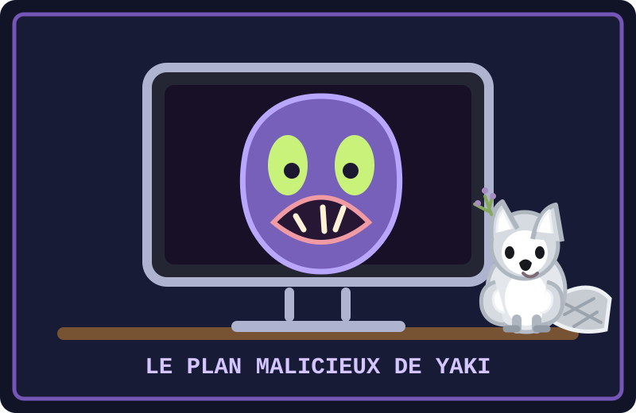

Un soir, Neko regardait tranquillement un épisode de sa série dans le salon. Yaki, mon frère, avait repéré le moment parfait pour une blague : juste à la fin de l’épisode, quand l’écran devait devenir noir, il avait préparé un visage effrayant à faire apparaître sur la télévision. Un vrai petit screamer visuel, avec de grands yeux et un sourire sinistre. Son plan était secret… enfin, secret pour Neko. Yaki avait déjà du mal à retenir son rire.
Le dernier écran de l’épisode
L’épisode s’est terminé. L’écran est devenu noir une seconde, puis le visage a surgi d’un coup. Neko a sursauté et lâché un grand « AAH ! » Yaki n’a pas tenu deux secondes avant d’éclater de rire. Speed a ri aussi, et moi, Mini Castor, j’étais plié en deux. Yuki essayait de garder son air impassible, mais son petit rire l’a trahi. Même Toutou Yaki, qui était allongé sur le ventre comme à son habitude, riait doucement depuis son coussin.
Neko a vite compris que c’était une blague et s’est mis à rire avec nous. Il a regardé Yaki, mi-amusé, mi-impressionné : « Alors, c’était toi, le réalisateur de cette fin ? » Yaki a fait une révérence comme s’il venait de recevoir un prix de cinéma. Il était très fier de son timing. Moi, j’ai suggéré de vendre des billets pour la prochaine projection. Yuki a répondu : « Nul. » J’ai rangé la caisse, mais je garde l’idée pour un film moins surprenant.
Et Tristan avait une idée de parfum
Tristan Yaki, notre frère castor et fils de Neko et Speed, était là lui aussi. Il ressemble beaucoup à Toutou Yaki, mais il est toujours assis, bien droit, au lieu de s’allonger. Après avoir ri avec nous, il a annoncé très sérieusement : « Sens mes fesses ! Elles sentent la lavande ! » C’est sa plaisanterie préférée. Personne n’a vérifié le parfum : nous étions encore trop occupés à rire du visage sur la télé.
Finalement, Neko a félicité Yaki pour son idée, tout en lui demandant de prévenir avant la prochaine surprise. Yaki a promis… avec le sourire de quelqu’un qui venait peut-être de trouver une autre idée. Nous avons remis l’épisode au début pour que Neko puisse voir la fin sans screamer. Ce soir-là, toute la famille a ri ensemble : Yaki avait réussi son plan malicieux, mais le meilleur moment, c’était surtout de voir Neko rire avec nous.